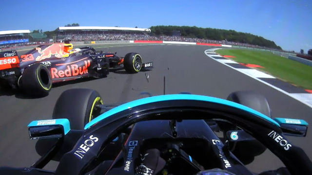

This is a quick personal review, with no deep investigation, just from a TV spectator point of view. It also, my test page as I am learning web development. So don't take it too serious, there will be a lot of passion moments and unaccurated data, but maybe you'll agree with me on:
Reasons that I believe Mercedes and Hamilton lost the championship by themselves in the first place.
Ops, em portugues-BR por enquanto.

Grande Prêmio da Emília-Romanha
Grande Prêmio de Portugal
Grande Prêmio da Espanha
Grande Prêmio de Monaco
Grande Prêmio do Azerbaijão
Grande Prêmio da França
Grande Prêmio da Estiria
Grande Prêmio da Áustria
Grande Prêmio da Grã-Betanha
Grande Prêmio da Hungria
Grande Prêmio da Bélgica
Grande Prêmio dos Países Baixos
Grande Prêmio da Itália
Grande Prêmio da Rússia
Grande Prêmio da Turquia
Grande Prêmio dos Estados Unidos
Grande Prêmio da Cidade do México
Grande Prêmio da Turquia
Grande Prêmio de São Paulo
Grande Prêmio do Catar
Grande Prêmio da Arábia Saudita
Grande Prêmio de Abu Dhabi